Blog
Blog
支持向量机之理论篇
参考教程支持向量机(SVM Support Vector Machine)
超平面：将数据集分开的直线。若数据集是二维的，则超平面为直线；若数据集是三维的，则超平面为平面。以此类推，
若数据集为 n 维，则超平面为 n-1 维。若数据是线性可分的，则用一条直线就可以将他们分开；但实际生活中，数据往
往是线性不可分的，这时，我们就需要借用核函数(低维度到高维度的转换)，根据数据的维度，将数据放到立体空间中，
然后用一个超平面来将其分开。
支持向量：数据集中离超平面距离最小的数据点
机(Machine)：即分类器
解决的问题：找到将数据集分类的超平面，但实际上，这样的超平面往往不止一个，因此我们的目标是找到与支持向量
距离最远的那个超平面。即最大间隔超平面。图片表述如下所示：
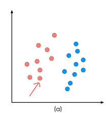 ————> 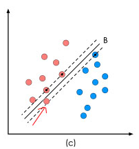 ————> 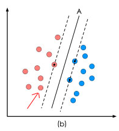
线性 SVM
一. 数学建模
求解‘最优决策面’的过程，实际上就是最优化。在最优化问题的求解过程中，往往涉及到两个对象：
(1) 目标函数，也就是你希望使什么东西的什么指标达到最好；
(2) 优化对象：也就是你希望通过改变哪个对象来达到目标函数的最优化。
在线性 SVM 中，目标函数显然是‘分类间隔’，优化对象即是‘决策面’。要解决该问题，首先要对其进行数学建模，
也即是将‘决策面’和‘分类间隔’进行数学描述。数学建模时，先在二维空间建模，再推广到三维空间。
1. 决策面方程
我们知道在二维空间下决策面是一条直线，因此此时的决策面方程表示如下：
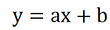
让我们做一下小小的改变，将 y 换成 x2,方程如下：

然后进一步将其向量化：
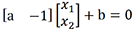
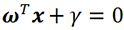
其中 w(w1;w2,...,wd) 为法向量，决定了超平面的方向，b 为位移项，决定了超平面与原点之间的距离。
超平面（分类器）的作用：向分类器中输入数据分类器会给出其类别标签。
此时的超平面只能表示分类间隔，因此，我们希望有个函数能在表示分类间隔的同时，同时给出其类别标签。
海维赛德阶跃函数可以实现这个目标，当 u<0 时，f(u) = -1；反之输出 1。因此，对于输入的数据，
当 f(x)>0 时，属于类别 1，反之属于类别 0,但如果 f(x)=0 怎么办？是将它划分到类别 1 还是类别 0 呢？
似乎很难办，因此我们希望 f(x) 要么为很大的正数，要么为很小的负数，这样问题就解决了。
因此，公式作如下变换：
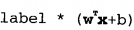
2. 分类间隔
根据点(x1,y1)到直线 ax+by+c=0 的距离为 ax1+by1+c / √a²+b²，可得到分类间隔公式如下：
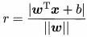
函数间隔：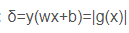
范数：||w|| 叫做向量 w 的范数，范数是对向量长度的一种度量。我们通常所说的向量的长度，
其实是它的第二范数。因此向量 w=(w1, w2, w3,…… wn) 的 p 范数为 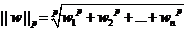
现将 w 和 b 归一化，即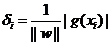
可以看到，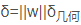，如果函数距离一定，那么分类距离与 ||w|| 是成反比的,因此我们考虑固定一项而最优化另一项，
如果令函数间隔为 1，我么就可以 通过 ||w|| 的最小值来求解。
为什么令函数距离为 1？
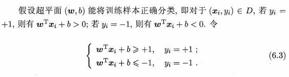
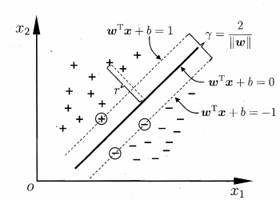
从图中可以得到，离超平面最近的点(也即是支持向量)使等号成立。因此支持向量的函数距离为 1。
而我们要最大化的距离，正是支持向量到超平面的距离。
因此，我们现在的目标是：
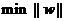
但实际上对于这个目标，我们通常转换成另一个等价式来求解：
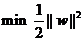
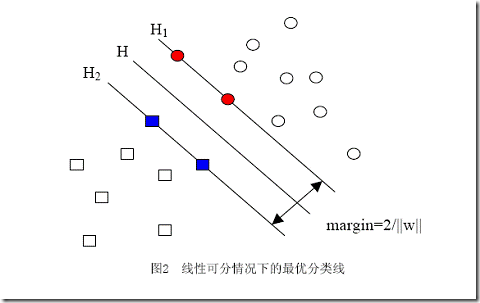
不难看出，当 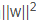 达到最小时，||w|| 也是最小，因为 ||w|| 是向量的长度，是一个非负数。如此看来，当 ||w|| 为 0 的时候，
不就是最小的时候吗？但这是我们发现，当 ||w||=0 时的几何意义，即直线 H1 与 H2 之间的距离无限大，我们原本的目标是
想通过 H1 与 H2 来对数据点的类别进行判断，即在直线 H1 一侧的属于一类，在直线 H2 一侧的属于另一类，但此时，
所有的点都在 H1 与 H2 中间，无法进行分类。这是由于我们没有给这个优化问题加上约束条件而导致的。约束条件就是在
求解过程中必须满足的条件，体现在本问题中就是我们计算分类距离的数据点不是随机的，从图中可以看到，数据点应该在
直线 H1 、H2 之外，或者至少在直线上，而不能跑到两者中间。前文提到过将函数距离定义为 1，这是指将数据集中函数距离
最短的那一点的间隔定义为 1，也就是说数据集中其他点的函数距离都不会小于 1，用数学形式描述为：
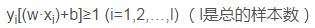
但我们常常习惯让式子的值和0比较，因而经常用变换过的形式：
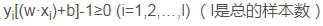
在上述优化问题中，我们在优化时引入了约束条件，因此，新的求解目标为：
，
二、求解准备
凸集
在开始计算之前，我们必须确定一件事情。就是我们求解的这个问题是否有解？如果有解，能否找到？这便引出了凸集的概念。
凸函数有一个很好的性质，即只要能证明我们求解的问题是凸函数，最终得到的解一定是全局最优解。
那么凸集到底是个啥呢？
凸函数的判别方法如下：
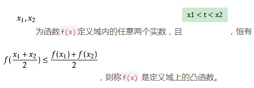
根据以上判别条件得到我们要求的问题是一个凸函数。而且，我们已经知道，这是一个最优问题(也就是规划问题)，
在本问题中，自变量是 ||w||，它是一个二次函数，因此它是一个凸二次规划问题。
对于一般的规划问题，我们很容易求解(不就是高中背得滚瓜烂熟的求导取极值吗？)；但对于带约束条件的规划问题你还会吗？
(就是在大学课堂上你睡觉那会老师讲的通过添加拉格朗日乘子将有约束的规划问题转换为无约束的规划问题嘛，看吧，不记得了，
这就是你上课睡觉时欠下的债，笑)，既然这样，那就让我们来回顾下拉格朗日乘子法吧。
拉格朗日乘子法
基本的拉格朗日乘子法就是求函数 f(x1,x2) 在约束条件 g(x1,x2) = 0 下的极值的方法。是一种经典的求解带约束条件的函数
极值的方法，通过将约束条件函数与原函数联立为一个新函数的方法求解。新函数为 F(x,λ) = f(x) + λg(x),这样就将有约束的
极值求解问题转换成了无约束的极值求解问题。其中，λ 叫做拉格朗日乘子。
但是刚打完一个怪，下一个又来了。因为人们发现，使用拉格朗日乘子法获得的函数，使用求导的方式求解依然困难。
可是这能难倒聪明的人类吗？(能难倒我，但大神就是大神，笑)，所以大神们又想了一个新的解决办法，拉格朗日对偶
拉格朗日对偶问题
1. 原始问题
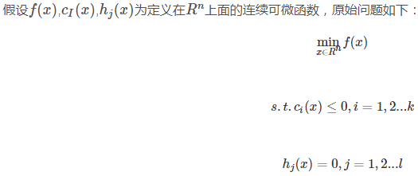
引入广义拉格朗日函数：
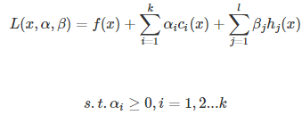
可以将原始问题转换为求极小极大问题：

原问题与极小极大问题是等价的。
2. 对偶问题
广义拉格朗日函数的极大极小问题描述如下：
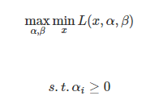
3. 两种问题的关系
如果原始问题和对偶问题都有最优解，那么满足：
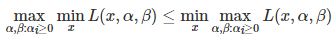
对于求解来讲，我们关注的是上式在什么时候成立，这样我们就可以通过求解对偶问题最优解来得到原始问题的最优解。
原始问题和对偶问题的最优解都是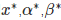的充分条件是满足下面的 KKT 条件
4. KKT 条件
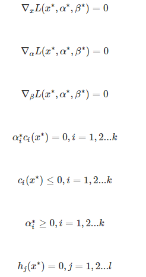
因此，要求解这个问题首先需要完成下面两个步骤：
1. 使用拉格朗日乘子法将有约束的规划问题转化为无约束的规划问题；
2. 使用拉格朗日对偶性，将不易求解的问题转化为容易求解的问题。
第一步：将有约束规划问题转化为无约束规划问题：
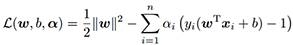
其中 αi 叫做拉格朗日乘子，要求 αi 大于等于 0。现在令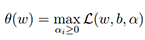
当样本点不满足约束条件时，即在可行区域外，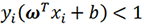，假设 αi 为正无穷，那么 θ(w) 显然也是正无穷。
当样本点满足约束条件，即在可行区域内，
 ，此时 θ(w) 满足原始条件的约束，因此 θ(w) 就等于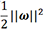
，此时 θ(w) 满足原始条件的约束，因此 θ(w) 就等于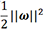将上述两种情况结合到一起，就变成：
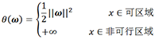
这样，我们就通过拉格朗日的办法重新定义一个无约束问题这个无约束问题等价于原来的约束优化问题，从而将约束问题无约束化！
第二步：将原始拉格朗日函数转化为其对偶函数
对 w 和 b 求偏导并令其等于 0。
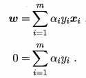
将偏导结果代入第一步转化得到的无约束函数中，可得：
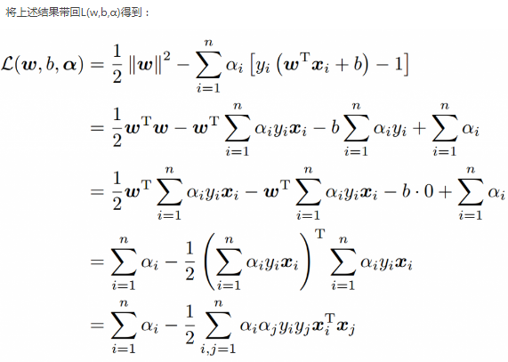
从化简结果中可以看到，现在的 L(w,b,α) 函数中只含有 αi 一个变量。求出 αi 后，便可得到 w 和 b。
这样就得到了原始拉格朗日函数的对偶问题，即
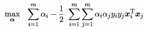
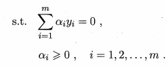
上述问题需满足以下条件：
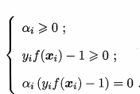
因此，对于所有的训练样本 (xi,yi) 总是满足 αi = 0 或 yif(xi) = 1。若 ai = 0,则该样本不会在求解函数中出现，
对 f(x) 没有任何影响；若 ai 大于 0，那么必有 yif(xi) = 1，所有的样本点位于最大间隔的边界上，是一个支持向量。
这显示出支持向量机的一个重要性质：训练完成后，大部分的样本都不需要保留，最终模型只与支持向量有关。
我们之所以费这么大劲进行转化，是因为我们想把它转化成可以使用 SMO 算法求解的问题。那么什么是 SMO 算法呢？
SMO(Sequential Minimal Optimization 序列最小化) 算法
SMO 算法的思想是将大优化问题分解成多个小的优化问题，这些小优化问题往往更容易求解，而且按顺序对小优化问题求解的答
案与大优化问题的答案一致，在结果完全相同的同时，SMO 所耗费的时间更短。
SMO 的基本思路是先固定 ai 之外的所有参数，然后求 ai 上的极值。由于存在约束 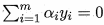，
若固定 ai 之外的所有参数，那么 ai 可由其他变量导出。于是 SMO 每次选择两个变量，并固定其他参数，
在初始化其他参数后， SMO 不断执行如下两个步骤直至收敛：
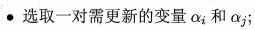
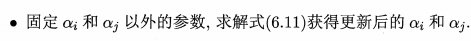
(6.11) 即转化后得到的对偶问题
利用 SMO 算法求解该问题的详细步骤
以上所有的讨论都基于一个大前提，即数据集是线性可分的。但实际生活中，数据集往往是线性不可分的，
这时候我们就需要使用核函数对数据集进行处理，使在低维空间线性不可分的数据集变为在高维空间线性可分的数据集。
核函数
核函数的基本作用就是接受两个低维空间的向量，能够计算出那两个低维向量通过某些变换得到的高维空间向量的內积。